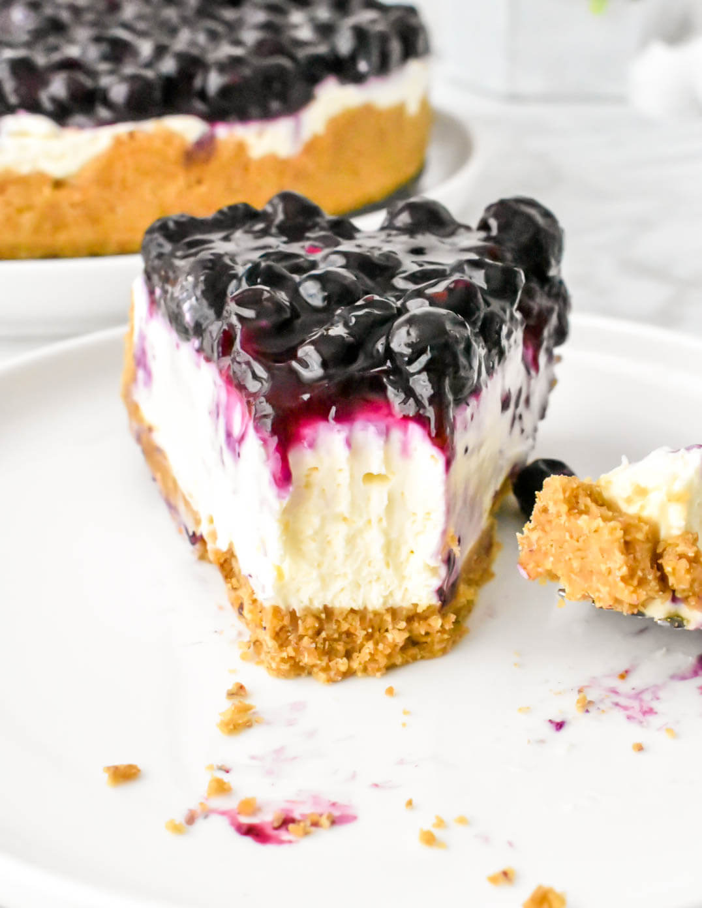

Blueberry Cheesecake

Description
Swirling blueberry puree into cheesecake batter isn't only beautiful, it's extremely delicious. The cheesecake stays extra-creamy and has the perfect tartness to it that will have you saying, "just one more bite," another thousand times. It's the perfect ending to an outdoor dinner and though the cheesecake is just as rich the fresh fruit brings a welcome brightness to it making it one of our favorite summer desserts.
Ingredients:
- 2 tablespoons white sugar
- ¼ cup melted butter
- 2 (8 ounce) packages cream cheese, softened
- 1 cup sour cream
- ¾ cup white sugar
- 1 teaspoon vanilla extract
- 2 tablespoons all-purpose flour
- 4 eggs
- 2 cups frozen blueberries, dry pack
- ⅓ cup blueberry jelly
Steps:
- Combine crumbs, 2 tablespoons sugar and butter. Pat mixture into the bottom of a 9 inch springform pan.
- Mash cream cheese until soft and creamy. Gradually beat in sour cream, 3/4 cup sugar, vanilla and flour. Beat in eggs one at a time.
- Pour mixture into crumb-lined pan. Bake in a preheated 325 degree F (165 degrees C) oven for 1 hour or until firm to the touch.
- Cool and then remove cake from pan by loosening edges with a knife. Place frozen blueberries on top of cake. Melt jelly and spoon over blueberries to glaze. Chill until ready to serve.